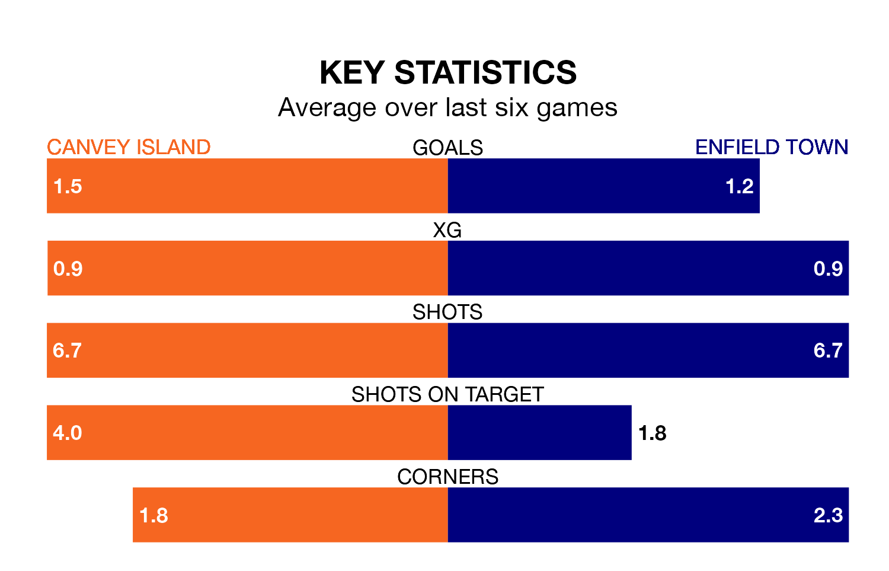

Enfield Town travel to the Brockwell Stadium looking to secure a first win in six Isthmian Premier Division games against Canvey Island on Saturday.
Enfield have lost three and drawn two matches since they last earned three points – against Haringey Borough on January 9.
They face a Canvey Island side who have won three and lost two over that time.
With 51 goals in 27 games so far this season, Enfield are scoring more than average in the league with 1.9 goals per game. And they are conceding at an average rate, letting in 43 goals at a rate of 1.6 per game.
Canvey Island, meanwhile, are average scorers, with 1.6 goals per game. They have conceded 2.0 goals per game.
In the last 10 years, Canvey Island and Enfield have played each other on 10 occasions. They won four each, and they drew twice.
On average, the Gulls scored 1.7 goals and Enfield 1.6 in those matches.
Their last meeting was on November 11, when Enfield won 3-0 at home.
Town are fifth in the table after 27 games, of which they have won 13 and drawn six, earning 45 points.
The Gulls are eight places behind the away side in 13th, with 11 wins and two draws putting them on 35 points.
Canvey Island's last match was on January 27, a 5-1 loss against Chatham Town.
Enfield lost 2-1 against Billericay Town last time out, on Tuesday.
Updated: 10:40 (UTC), 01/02/24